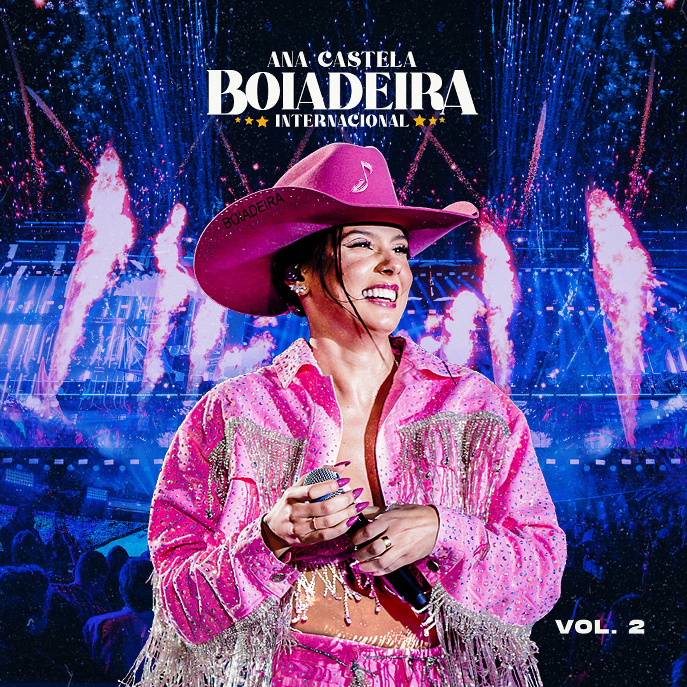
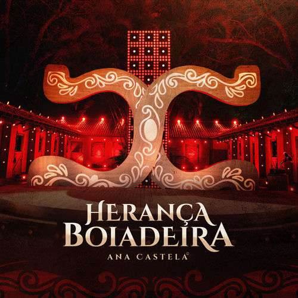
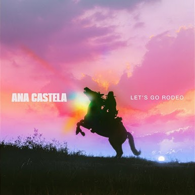

Ana Castela
15M seguidores
Músicas Populares
- Canudinho
- Pipoco (feat. Melody & DJ Chris no Beat)
- Deja Vu (feat. Luan Santana)
- Dia de Fluxo (feat. Ludmilla)
- Solteiro Forçado
Álbuns

Boiadeira Internacional

Herança Boiadeira

Lets Go Rodeo
Playlists
- Top Brasil
- This is Ana Castela
- Esquenta Sertanejo
Ana Castela
Ana Flávia Castela (Amambai, 16 de novembro de 2003), também conhecida pela alcunha Boiadeira, é uma cantora, compositora e musicista brasileira. Em 2021, começou sua carreira musical com o single de estreia "Boiadeira" e, em 2022, se tornou conhecida nacionalmente devido ao sucesso da música "Pipoco", parceria sua com a também cantora Melody e o músico DJ Chris no Beat.